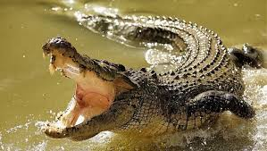
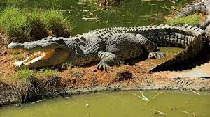

Крокодилы имеют крупное, плотное, ящероподобное тело, вытянутую и приплюснутую морду, сжатые с боков хвосты, и глаза, уши и ноздри, располагающиеся на верхней части головы. Они хорошо плавают и могут достаточно быстро передвигаться по земле. Их кожа очень толстая и покрыта непересекающимися чешуями.
Чаще всего добычей крокодила становятся животные, приходящие на водопой. В основном это копытные животные: антилопы, зебры, буйволы, газели, олени, домашний скот. Кроме копытных он не прочь подкрепиться рыбой, водоплавающими птицами, грызунами, рептилиями и земноводными.
 